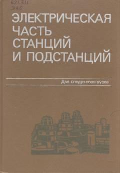

ЭЧElektr stansiyalari va podstansiyalarining elektr qismlari bo'yicha oliy o'quv yurtlari uchun darslik.
Ushbu darslik elektr stansiyalari va podstansiyalarning elektr qismlari, jihozlarning xususiyatlari va elektr sxemalarini o'z ichiga oladi. Kitobda qisqa tutashuv toklarini cheklash usullari va zamonaviy energetika talablari batafsil yoritilgan.